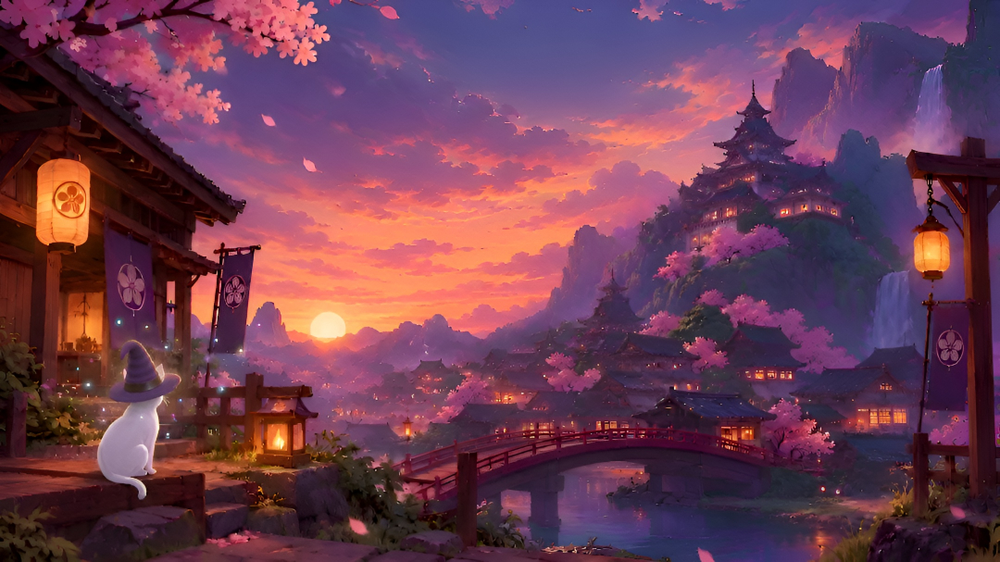
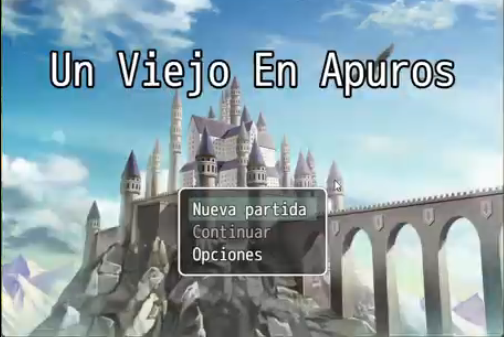
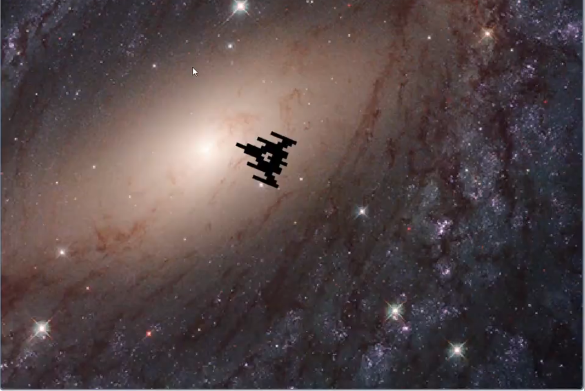

Lead Developer — Proyectos Indie
Freelance · 2026 – PresenteDesarrollo completo de videojuegos: diseño, programación, audio y publicación.
Soy Dylan, desarrollador de videojuegos. Combino mecánicas sólidas, arte procedural y narrativa. Acá muestro cómo hice cada proyecto: fotos, herramientas y archivos.
Ver proyectos1+ proyectos · 1 años de experiencia · 1 game jams

Sos un gato magico que su mision es conseguir algunos materiales para que tu dueña pueda realizar magia, esos objetos son ellos mismo representados en jefes, al derrotarlos se obtiene dicho objeto.

Sos un aventurero que en su viaje se topa con una señorita en problemas en donde acudes a ayudarla

Tu manejas una nave y una oleada de enemigos trata de eliminarte
Soy Dylan Fernandez, desarrollador de videojuegos con 1 año de experiencia creando proyectos independientes, de momento hago juegos interactivos y de aventura.
Estoy orientado mas a la programacion, integrar sistemas complejos: IA de comportamiento, generación procedural y audio reactivo. Trabajo como desarrollador principal o como programador en equipos pequeños, y disfruto las game jams.
Desarrollo completo de videojuegos: diseño, programación, audio y publicación.
Mecánicas y sistemas de juego en Unity, junto al equipo de arte y niveles.
Programación, diseño de juegos, gráficos 3D y audio interactivo.
¿Tenés un proyecto o querés charlar de videojuegos? Escribime a Dylanfer.enterprise@gmail.com o usá el formulario.